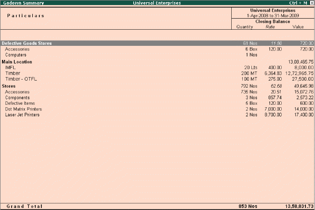

Multiple Warehouses / Locations
A Warehouse/Godown is a place where stocks/materials are stored. It could be either locations or even Storage racks. Your company could be maintaining multiple warehouses/godowns and hence would require stock statements for the individual warehouses. Tally.ERP 9 offers you the capability of maintaining multiple Godowns/Locations (Warehouses). It allows you to create multiple Godowns (warehouses) and at the time of accounting an inventory transaction (sales, purchase, stock Journal etc), you can specify Godowns for stock items to be stored or despatched.
To Enable Multiple Godowns,
# Press F11: Inventory Features, set Maintain Multiple Godowns to Yes To create a Godown, Go to Gateway of Tally > Inventory Info. > Godowns > Create
# Enter godown Name and other details
# Save screen
To view Godown Summary Report,
Go to Gateway of Tally > Display > Statements of Inventory > Godowns
# Select any Godown or Primary from the List of Godowns
# Tally.ERP 9 displays Stock Summary for that particular Godown
